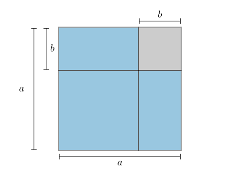

2. Algebra#
Kunne forenkle algebraiske uttrykk.
Kunne forklare hva et algebraisk uttrykk er.
Kunne begrunne og bruke kvadratsetningene til å utvide og faktorisere algebraiske uttrykk.
Kunne begrunne og bruke de distributive lovene for å utvide og faktorisere algebraiske uttrykk.
Algebraiske uttrykk#
Et algebraisk uttrykk består av variabler, koeffisienter, faktorer og ledd. Nedenfor ser du to eksempler på algebraiske uttrykk der vi har markert hvilke deler som hører til de ulike begrepene.
Eksempel 1#


Underveisoppgave 1#
Bestem hvilke deler av uttrykket nedenfor som er ledd, variabler, faktorer og koeffisienter.
- Ledd
\(3x^2\) og \(4xy\)
- Variabler
\(x\) og \(y\)
- Faktorer
\(3\) og \(x^2\) i leddet \(3x^2\), og \(4\), \(x\) og \(y\) i leddet \(4xy\)
- Koeffisienter
\(3\) i leddet \(3x^2\) og \(4\) i leddet \(4xy\)
Legge sammen algebraiske uttrykk#
Ofte må vi legge sammen eller trekke algebraiske uttrykk fra hverandre. Da legger vi sammen koeffisientene til like variabler. La oss se på et eksempel:
Eksempel 2#
Skriv uttrykket nedenfor så enkelt som mulig
Vi legger sammen ledd som inneholder samme variabel:
Underveisoppgave 2#
Skriv uttrykket nedenfor så enkelt som mulig
Vi legger sammen ledd som inneholder samme variabel:
Åpne parentser#
Når vi åpner opp en parentes, gjelder følgende regneregler:
Eksempel 3#
Trekk sammen uttrykket nedenfor.
Utvide og faktorisere algebraiske uttrykk#
1.Distributiv lov#
Den 1.distributive loven lar oss utvide og faktorisere algebraiske uttrykk med en felles faktor.
For tall \(a\), \(b\) og \(c\) gjelder
Nedenfor vises et rektangel.

Rektangelet har sidelengder \(a\) og \((b + c)\) Arealet av hele rektangelet kan derfor bestemmes direkte ved å gange sidelengdene:
Hele rektangelet er bygget opp av to mindre rektangler. Det ene rektangelet har sidelengder \(a\) og \(b\) og dermed et areal \(ab\). Det andre rektangelet har sidelengder \(a\) og \(c\) og dermed et areal \(ac\). Arealet av hele rektangelet kan derfor også bestemmes ved å legge sammen arealene til de to mindre rektanglene:
De to arealene må være like, og da får vi 1.distributiv lov:
Vi kan bruke 1.distributiv lov både til å utvide og faktorisere algebraiske uttrykk. La oss se på et eksempel der vi bruker den til å utvide et uttrykk:
Eksempel 4#
Utvid uttrykket nedenfor:
Vi bruker 1.distributiv lov:
Underveisoppgave 4#
Utvid uttrykket nedenfor.
Vi bruker 1.distributiv lov:
La oss se på et eksempel der vi bruker 1.distributiv lov til å faktorisere et uttrykk:
Eksempel 5#
Faktoriser uttrykket nedenfor.
Vi bruker 1.distributiv lov baklengs:
Underveisoppgave 5#
Faktoriser uttrykket nedenfor.
Vi bruker 1.distributiv lov baklengs:
Kvadratsetningene#
Kvadratsetningene er tre viktige identiteter som lar oss gange sammen og faktorisere to spesielle algebraiske uttrykk som dukker opp når vi senere skal jobbe med andregradsfunksjoner.
1.Kvadratsetning#
For to tall \(a\) og \(b\) gjelder
Nedenfor vises en figur av et kvadrat. Kvadratet er delt opp i mindre rektangler.

Sidelengdene av hele kvadratet er \(a + b\). Det betyr at arealet av hele kvadratet er
Vi kan også regne ut arealet av figuren ved å legge sammen arealene av de mindre rektanglene. Da får vi:
Siden de to arealene må være like, så får vi
som er 1.kvadratsetning.
Vi kan bruke 1.kvadratsetning både til å utvide og faktorisere algebraiske uttrykk. La oss se på et eksempel der vi utvider et uttrykk med 1.kvadratsetning:
Eksempel 6#
Utvid uttrykket nedenfor med 1.kvadratsetning
Vi bruker 1.kvadratsetning:
Underveisoppgave 6#
Bruk 1.kvadratsetning til å utvide uttrykket nedenfor.
Vi bruker 1.kvadratsetning:
La oss se på et eksempel der vi bruker 1.kvadratsetning til å faktorisere et uttrykk:
Eksempel 7#
Bruk 1.kvadratsetning til å faktorisere uttrykket nedenfor
Vi bruker 1.kvadratsetning baklengs:
Underveisoppgave 7#
Bruk 1.kvadratsetning til å faktorisere uttrykket nedenfor.
Vi bruker 1.kvadratsetning baklengs:
2.Kvadratsetning#
For to tall \(a\) og \(b\) gjelder
I figuren nedenfor vises et kvadrat. Kvadratet er delt opp i mindre rektangler.

Vi ser at det blå fargelagte området er et kvadrat med sidelengder \((a - b)\). Arealet av det blå fargelagte området er derfor
Vi kan også uttrykket arealet av det blå fargelagte området ved å ta arealet av hele figuren og trekke fra arealene til de grå rektanglene. Da får vi:
De to arealene må være like, og da får vi 2.kvadratsetning:
Vi kan bruke 2.kvadratsetning både til å utvide og faktorisere algebraiske uttrykk. La oss se på et eksempel der vi utvider et uttrykk med 2.kvadratsetning:
Eksempel 8#
Utvid uttrykket nedenfor med 2.kvadratsetning
Vi bruker 2.kvadratsetning:
Underveisoppgave 8#
Bruk 2.kvadratsetning til å utvide uttrykket nedenfor.
Vi bruker 2.kvadratsetning:
La oss nå se på et eksempel der vi bruker 2.kvadratsetning til å faktorisere et uttrykk:
Eksempel 9#
Faktoriser uttrykket nedenfor med 2.kvadratsetning
Vi bruker 2.kvadratsetning baklengs:
Underveisoppgave 9#
Bruk 2.kvadratsetning til å faktorisere uttrykket nedenfor.
Vi bruker 2.kvadratsetning baklengs:
Den siste kvadratsetningen uttrykker ikke arealet av et kvadrat, men heller arealet av ett kvadrat minus arealet av et annet kvadrat. Vi kaller den for konjugatsetningen.
Konjugatsetningen#
For to tall \(a\) og \(b\) gjelder
I figuren nedenfor vises et kvadrat. Kvadratet er delt opp i mindre rektangler.
{kind=link}

Figuren er et kvadrat med sidelengder \(a\). Det grå området er et kvadrat med sidelengder \(b\). Derfor kan vi skrive arealet av det blå fargelagte området som:
For å bestemme et annet uttrykk for arealet av det blå fargelagte området, kan vi flytte det ene rektangelet og legge det oppå det andre:

Da ser vi at hele det blå fargelagte området er et rektangel med sidelengdene \((a + b)\) og \((a - b)\) som betyr at arealet også kan skrives som
De to arealene må være like, så da får vi konjugatsetningen:
Vi kan bruke konjugatsetningen både til å utvide og faktorisere algebraiske uttrykk. La oss se på et eksempel der vi utvider et uttrykk:
Eksempel 10#
Bruk konjugatsetningen til å utvide uttrykket nedenfor.
Underveisoppgave 10#
Bruk konjugatsetningen til å utvide uttrykket nedenfor.
Så kan vi bruke konjugatsetningen til å faktorisere et uttrykk:
Eksempel 11#
Bruk konjugatsetningen til å faktorisere uttrykket nedenfor.
Underveisoppgave 11#
Bruk konjugatsetningen til å faktorisere uttrykket nedenfor.
Den 2.distributive loven#
Vi skal nå se på den siste viktige algebraiske loven vi trenger; den 2.distributive loven. Den er ikke så enkel å bruke til å faktorisere uttrykk, men den gir oss en enkel oppskrift på hvordan vi ganger sammen to parenteser.
2.Distributiv lov#
For tall \(a\), \(b\), \(c\) og \(d\) gjelder
Nedenfor vises et rektangel. Rektangelet er delt opp i mindre rektangler.
Bruk arealberegninger til å bestemme arealet av figuren på to forskjellige måter og vis at 2.distributiv lov stemmer.

Vi ser at hele rektangelet har sidelengder \((a + b)\) og \((c + d)\). Arealet av hele rektangelet kan derfor bestemmes direkte ved å gange sidelengdene:
Hele rektangelet er bygget opp av fire mindre rektangeler:
Et rektangel med sidelengder \(a\) og \(c\) som har areal \(ac\).
Et rektangel med sidelengder \(a\) og \(d\) som har areal \(ad\).
Et rektangel med sidelengder \(b\) og \(c\) som har areal \(bc\).
Et rektangel med sidelengder \(b\) og \(d\) som har areal \(bd\).
Arealet av hele rektangelet kan derfor også bestemmes ved å legge sammen arealene til de fire mindre rektanglene:
De to arealene må være like, og da får vi 2.distributiv lov:
La oss se på et eksempel der vi bruker 2.distributiv lov til å utvide et uttrykk:
Eksempel 12#
Utvid uttrykket nedenfor med 2.distributiv lov
Vi bruker 2.distributiv lov:
Underveisoppgave 12#
Utvid uttrykket nedenfor.